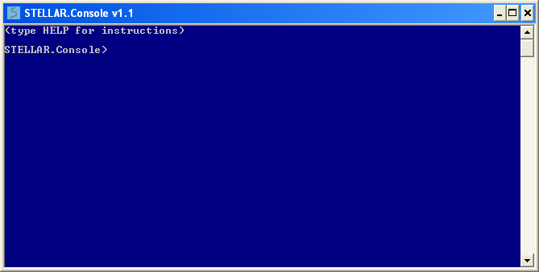
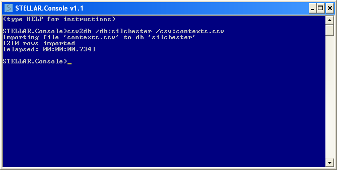
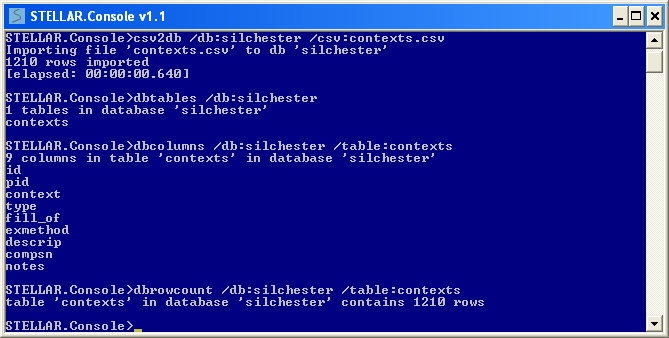
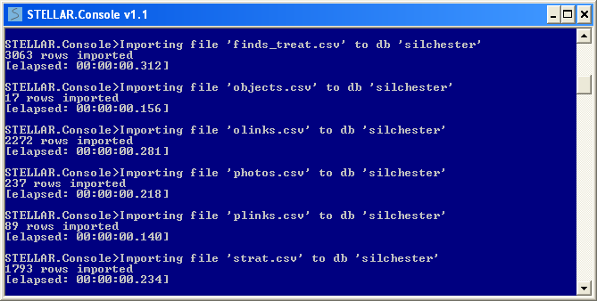
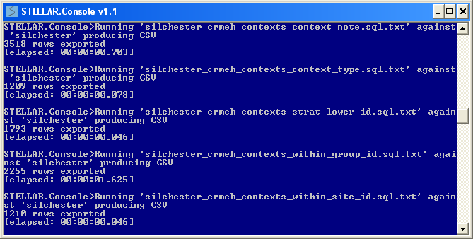
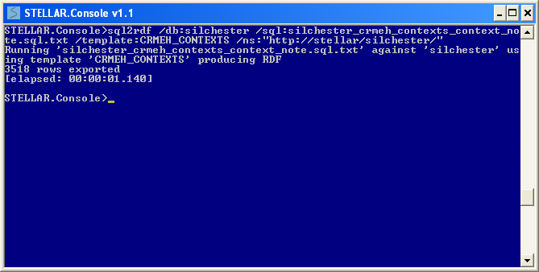
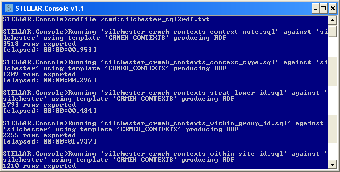
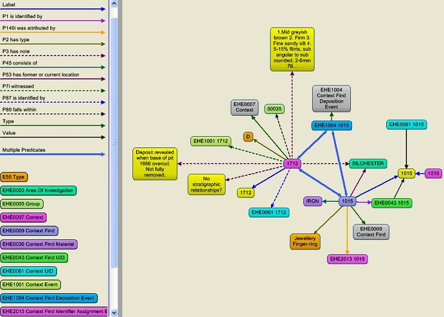

This tutorial describes installing the STELLAR.Console application, importing data from delimited files to an internal database, and exporting the data via SQL queries both to delimited files and to specific RDF formats. The tutorial is based on STELLAR.Console version 1.6
Go to http://hypermedia.research.glam.ac.uk/resources/STELLAR-applications/. It is worth reading the associated documentation (STELLAR.Applications.pdf) prior to undertaking the tutorial, as it will provide a good overview of the functionality available. Install the STELLAR.Console application (STELLAR.Setup.msi). Make a note of where the application was installed. If you already have a previous version of STELLAR.Console installed you will be prompted to 'uninstall' or 'repair' - choose 'repair' to upgrade your existing installation to the latest version.
In the interests of making this tutorial as realistic as possible the data used is the Roman Town Insula IX database from the Silchester project. The dataset (Data Copyright © University of Reading) is hosted by the Archaeology Data Service (ADS) and made available to download as a series of comma delimited text files (.csv) via their ArchSearch portal at http://ads.ahds.ac.uk/catalogue/resources.html?silchester_ahrc_2007 (Select "downloads" then "CSV"). Create a suitable new directory (e.g. c:\stellar_tutorial) and copy the CSV data files to that location.
Start the STELLAR.Console application from it's installation directory by double clicking on STELLAR.Console.exe. Note the STELLAR environment is displayed in grey on blue just to distinguish it from the normal command prompt.
The very first thing to do is to set a default data directory so you don't need to specify full file paths in subsequent commands. By default on startup the data directory will be the installation directory of the running application (You can verify this by just typing the command 'datadir' and hitting return). This is where STELLAR will look first for data files, and where it will attempt to write output files. Change the data directory like so (note: this setting is not remembered for subsequent sessions)
datadir /dir:"c:\stellar_tutorial"
To import one of the CSV files, type the following command:
csv2db /db:silchester /csv:"contexts.csv"
This creates a new internal database (silchester.db3) in the current data directory. If a database already exists with this name it will be used. The CSV data file will be imported to a named table in the database. By default the table name given will be the lowercase name of the data file minus any path and extension (i.e. "contexts"), but you may override that if necessary by adding /table:"mytablename" to the command. If the table already exists it will be overwritten. The application will give feedback to confirm that the file imported correctly, and you can verify the table creation by use of one or more of the following commands:
dbtables /db:silchester dbcolumns /db:silchester /table:contexts dbrowcount /db:silchester /table:contexts
See the document STELLAR.Applications.pdf for further details of these commands.
Although all STELLAR commands can be executed interactively, for consistency and repeatability you may find it more convenient to create a text file containing all the commands to be run sequentially. The commands to import all the Silchester CSV data to a new database are shown below, for convenience a text file of these commands is provided (silchester_csv2db.txt). Note command lines starting with the hash ('#') character will be treated as comments by the application, allowing you to document your command files.
# Import the CSV data files to database 'silchester' # Usage: STELLAR.Console < silchester_csv2db.txt csv2db /db:silchester /csv:"contexts.csv" csv2db /db:silchester /csv:"finds.csv" csv2db /db:silchester /csv:"finds_dims.csv" csv2db /db:silchester /csv:"finds_treat.csv" csv2db /db:silchester /csv:"objects.csv" csv2db /db:silchester /csv:"olinks.csv" csv2db /db:silchester /csv:"photos.csv" csv2db /db:silchester /csv:"plinks.csv" csv2db /db:silchester /csv:"strat.csv"
Now to import all CSV data files to named tables in the 'silchester' database, enter the following command:
cmdfile /cmd:silchester_csv2db.txt
SQL queries can be defined and saved to text files, then run against a STELLAR.Console database. A set of pre-defined SQL queries have been created for this tutorial, to extract named data columns that will be subsequently used by the STELLAR templates to produce RDF data.
To run one of these queries type the following command:
sql2csv /db:silchester /sql:"silchester_crmeh_contexts_context_note.sql.txt"
This will run the SQL query and produce a CSV file containing the results. By default the output file will be named by appending ".csv" to the SQL file name, but you can override the default if necessary by adding /csv:"myfilename.csv" to the command. Again for consistency and repeatability you may find it more convenient to create a text file containing all the commands. The commands to run all the SQL queries sequentially are shown below, a text file of these commands is provided (silchester_sql2csv.txt)
# Run SQL query and export results to CSV sql2csv /db:silchester /sql:"silchester_crmeh_contexts_context_note.sql.txt" sql2csv /db:silchester /sql:"silchester_crmeh_contexts_context_type.sql.txt" sql2csv /db:silchester /sql:"silchester_crmeh_contexts_strat_lower_id.sql.txt" sql2csv /db:silchester /sql:"silchester_crmeh_contexts_within_group_id.sql.txt" sql2csv /db:silchester /sql:"silchester_crmeh_contexts_within_investigation_id.sql.txt" sql2csv /db:silchester /sql:"silchester_crmeh_finds_find_material.sql.txt" sql2csv /db:silchester /sql:"silchester_crmeh_finds_find_type.sql.txt" sql2csv /db:silchester /sql:"silchester_crmeh_finds_production_period.sql.txt" sql2csv /db:silchester /sql:"silchester_crmeh_finds_within_context_id.sql.txt" sql2csv /db:silchester /sql:"silchester_crmeh_finds_within_investigation_id.sql.txt" sql2csv /db:silchester /sql:"silchester_crmeh_groups_group_note.sql.txt" sql2csv /db:silchester /sql:"silchester_crmeh_groups_within_group_id.sql.txt" sql2csv /db:silchester /sql:"silchester_crmeh_groups_within_investigation_id.sql.txt" sql2csv /db:silchester /sql:"silchester_crmeh_sample_measurements.sql.txt" sql2csv /db:silchester /sql:"silchester_crmeh_samples_sample_note.sql.txt" sql2csv /db:silchester /sql:"silchester_crmeh_samples_within_context_id.sql.txt" sql2csv /db:silchester /sql:"silchester_crmeh_samples_within_investigation_id.sql.txt" sql2csv /db:silchester /sql:"silchester_skos_concepts_find_material.sql.txt"
Now to run all SQL queries and export the results to CSV, enter the following command:
cmdfile /cmd:silchester_sql2csv.txt
Once you have confirmed the output is as expected, it can be used to produce RDF data. There are two ways to approach this task, either use the output from SQL2CSV as input for the RDF conversion using command CSV2RDF, or perform the conversion from the query to RDF in one step using the command SQL2RDF, the end result will be the same. CSV2RDF can be used where you have alternative means of producing the CSV files (rather than using the internal STELLAR database functionality). We will show how to use the SQL queries to directly produce RDF.
To run one of the queries and produce RDF enter the following command:
sql2rdf /db:silchester /sql:"silchester_crmeh_contexts_context_note.sql.txt" /template:CRMEH_CONTEXTS /ns:"http://stellar/silchester/"
This will run the SQL query and produce RDF data conforming to the CRMEH_CONTEXTS template. By default the output file will be named by appending ".rdf" to the SQL file name, but you can override the default if necessary by adding /rdf:"myfilename.rdf" to the command. Again for consistency and repeatability you may find it more convenient to create a text file containing all the commands. The commands to run all the SQL queries sequentially are shown below, a text file containing these commands is provided (silchester_sql2rdf.txt)
# STELLAR commands to export the silchester data to RDF # Usage: STELLAR.Console < silchester_sql2rdf.txt sql2rdf /db:silchester /sql:"silchester_crmeh_contexts_context_note.sql.txt" /template:CRMEH_CONTEXTS /ns:"http://stellar/silchester/" sql2rdf /db:silchester /sql:"silchester_crmeh_contexts_context_type.sql.txt" /template:CRMEH_CONTEXTS /ns:"http://stellar/silchester/" sql2rdf /db:silchester /sql:"silchester_crmeh_contexts_strat_lower_id.sql.txt" /template:CRMEH_CONTEXTS /ns:"http://stellar/silchester/" sql2rdf /db:silchester /sql:"silchester_crmeh_contexts_within_group_id.sql.txt" /template:CRMEH_CONTEXTS /ns:"http://stellar/silchester/" sql2rdf /db:silchester /sql:"silchester_crmeh_contexts_within_investigation_id.sql.txt" /template:CRMEH_CONTEXTS /ns:"http://stellar/silchester/" sql2rdf /db:silchester /sql:"silchester_crmeh_finds_find_material.sql.txt" /template:CRMEH_FINDS /ns:"http://stellar/silchester/" sql2rdf /db:silchester /sql:"silchester_crmeh_finds_find_type.sql.txt" /template:CRMEH_FINDS /ns:"http://stellar/silchester/" sql2rdf /db:silchester /sql:"silchester_crmeh_finds_production_period.sql.txt" /template:CRMEH_FINDS /ns:"http://stellar/silchester/" sql2rdf /db:silchester /sql:"silchester_crmeh_finds_within_context_id.sql.txt" /template:CRMEH_FINDS /ns:"http://stellar/silchester/" sql2rdf /db:silchester /sql:"silchester_crmeh_finds_within_investigation_id.sql.txt" /template:CRMEH_FINDS /ns:"http://stellar/silchester/" sql2rdf /db:silchester /sql:"silchester_crmeh_groups_group_note.sql.txt" /template:CRMEH_GROUPS /ns:"http://stellar/silchester/" sql2rdf /db:silchester /sql:"silchester_crmeh_groups_within_group_id.sql.txt" /template:CRMEH_GROUPS /ns:"http://stellar/silchester/" sql2rdf /db:silchester /sql:"silchester_crmeh_groups_within_investigation_id.sql.txt" /template:CRMEH_GROUPS /ns:"http://stellar/silchester/" sql2rdf /db:silchester /sql:"silchester_crmeh_sample_measurements.sql.txt" /template:CRMEH_SAMPLE_MEASUREMENTS /ns:"http://stellar/silchester/" sql2rdf /db:silchester /sql:"silchester_crmeh_samples_sample_note.sql.txt" /template:CRMEH_SAMPLES /ns:"http://stellar/silchester/" sql2rdf /db:silchester /sql:"silchester_crmeh_samples_within_context_id.sql.txt" /template:CRMEH_SAMPLES /ns:"http://stellar/silchester/" sql2rdf /db:silchester /sql:"silchester_crmeh_samples_within_investigation_id.sql.txt" /template:CRMEH_SAMPLES /ns:"http://stellar/silchester/" sql2rdf /db:silchester /sql:"silchester_skos_concepts_find_material.sql.txt" /template:SKOS_CONCEPTS /ns:"http://stellar/silchester/concepts/"
Now to run all SQL queries and convert the results to RDF, enter the following command:
cmdfile /cmd:silchester_sql2rdf.txt
You now have a set of RDF data files containing archaeological data conforming to CRMEH model, which can be imported into any RDF enabled system e.g. triplestore etc. One useful (and free) visual tool we have used for testing the outputs of STELLAR is 'Gruff' (http://www.franz.com/agraph/gruff/). The following picture shows some of the converted silchester data from the tutorial displayed using the Gruff tool.
Next you might want to explore creating and using your own templates to shape the data to ANY textual format (i.e. not just RDF). See tutorial2.html for details of how to do that.